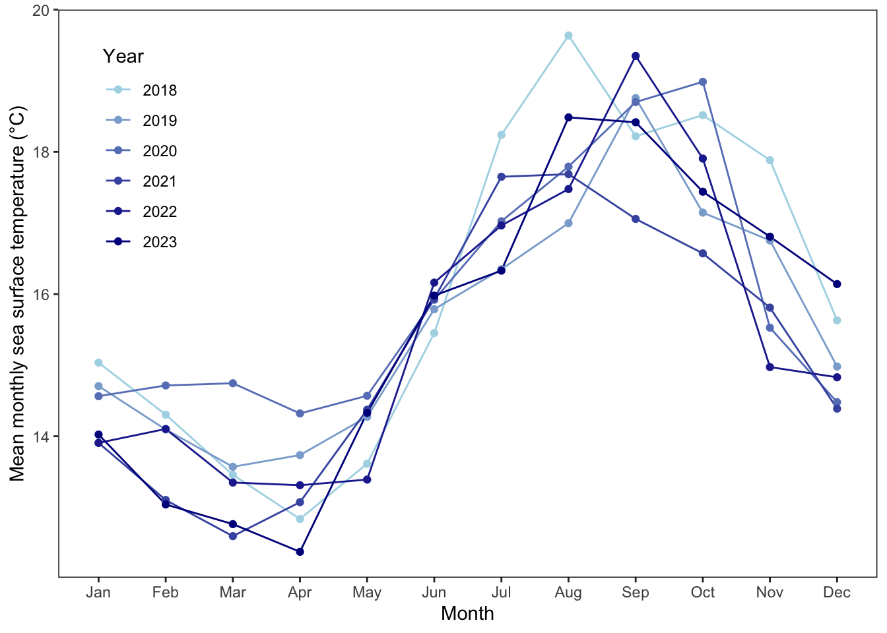
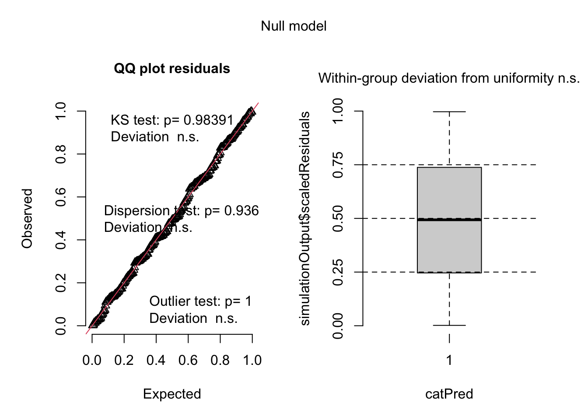
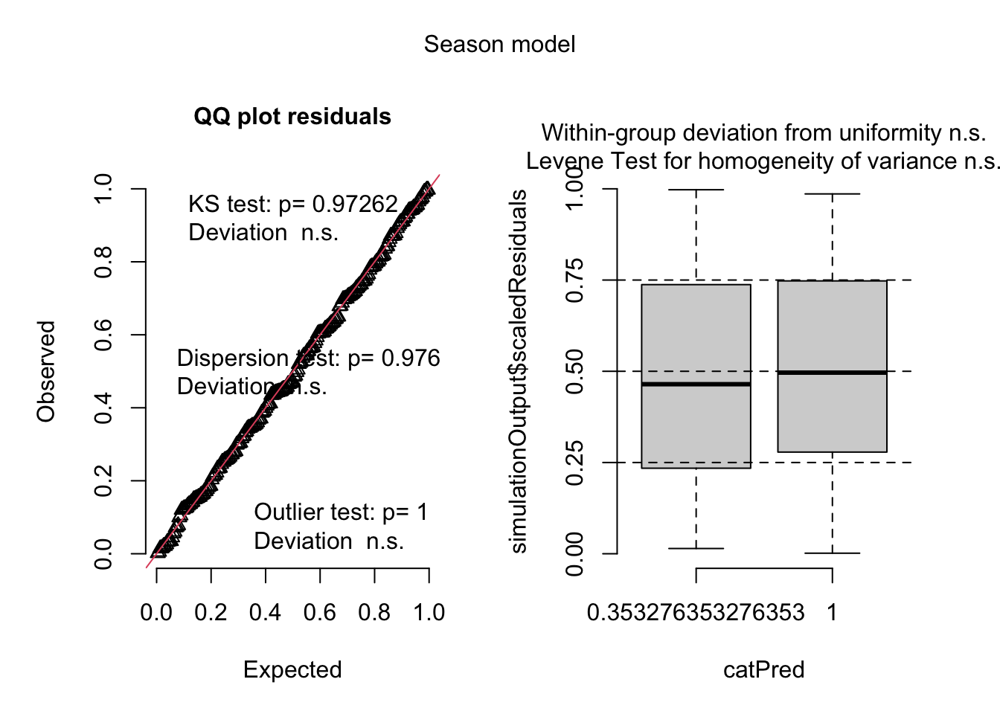
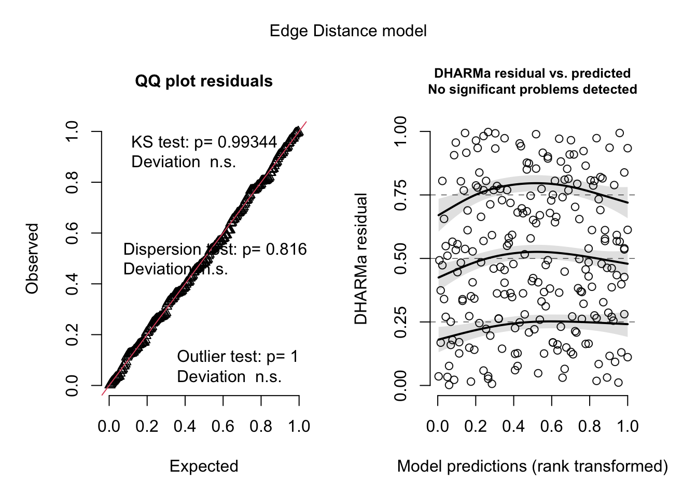
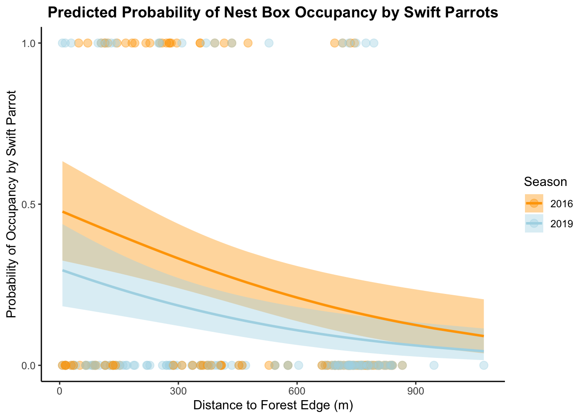

── Attaching core tidyverse packages ──────────────────────── tidyverse 2.0.0 ──
✔ dplyr 1.1.4 ✔ readr 2.1.5
✔ forcats 1.0.0 ✔ stringr 1.5.1
✔ ggplot2 3.5.1 ✔ tibble 3.2.1
✔ lubridate 1.9.4 ✔ tidyr 1.3.1
✔ purrr 1.0.4
── Conflicts ────────────────────────────────────────── tidyverse_conflicts() ──
✖ dplyr::filter() masks stats::filter()
✖ dplyr::lag() masks stats::lag()
ℹ Use the conflicted package (<http://conflicted.r-lib.org/>) to force all conflicts to become errors
library(lubridate)library(ggplot2)library(car)
Loading required package: carData
Attaching package: 'car'
The following object is masked from 'package:dplyr':
recode
The following object is masked from 'package:purrr':
some
library(scales)
Attaching package: 'scales'
The following object is masked from 'package:purrr':
discard
The following object is masked from 'package:readr':
col_factor
library(MuMIn)library(DHARMa)
This is DHARMa 0.4.7. For overview type '?DHARMa'. For recent changes, type news(package = 'DHARMa')
Rows: 227 Columns: 10
── Column specification ────────────────────────────────────────────────────────
Delimiter: ","
chr (4): box, box occupant, eventID, repeated use
dbl (6): edge distance, season, sp, cs, e, tm
ℹ Use `spec()` to retrieve the full column specification for this data.
ℹ Specify the column types or set `show_col_types = FALSE` to quiet this message.
Problem 1
a.
In part 1, they used _______. In part 2, they used _______.
Problem 2
a.
sst <-read_csv("data/SST_update2023.csv") # Read in the data
Rows: 291384 Columns: 5
── Column specification ────────────────────────────────────────────────────────
Delimiter: ","
chr (1): site
dbl (3): latitude, longitude, temp
date (1): date
ℹ Use `spec()` to retrieve the full column specification for this data.
ℹ Specify the column types or set `show_col_types = FALSE` to quiet this message.
# Cleansst_clean <- sst |>mutate(year =as.factor(year(ymd(date)))) |># Extract year mutate(month =factor(month(ymd(date), label =TRUE, abbr =TRUE), # extract monthlevels = month.abb, ordered =TRUE)) |>group_by(year, month) |># Group by year and monthsummarize(mean_monthly_sst =mean(temp, na.rm =TRUE), .groups ="drop") # mean monthly SSTsst_clean |>slice_sample(n =5) # display 5 random rows
# A tibble: 5 × 3
year month mean_monthly_sst
<fct> <ord> <dbl>
1 1997 Dec 16.6
2 1988 Feb 13.8
3 2009 Jan 13.5
4 1989 Oct 16.6
5 2011 Sep 16.4
sst_filtered <- sst_clean |># Filter data for 2018 to 2023filter(year %in%as.character(2018:2023))# Create the plotggplot(sst_filtered, aes(x = month, y = mean_monthly_sst, group = year, color = year)) +# lines and pointsgeom_line() +geom_point() +scale_color_manual(values =colorRampPalette(c("lightblue", # Color gradient from light to dark"darkblue"))(length(unique(sst_filtered$year))) ) +labs( # labels and textx ="Month",y ="Mean monthly sea surface temperature (°C)",color ="Year" ) +scale_x_discrete(drop =FALSE) +# x-axis labels to display months in ordertheme( # make legendlegend.position =c(0.1, 0.75), # Adjust positionlegend.background =element_blank(), # No outline for legend boxpanel.border =element_rect(color ="black", fill =NA), #panel outlinepanel.background =element_rect(fill ="white"), # background colorpanel.grid =element_blank() )
Warning: A numeric `legend.position` argument in `theme()` was deprecated in ggplot2
3.5.0.
ℹ Please use the `legend.position.inside` argument of `theme()` instead.

Problem 3
a.
For 4 different columns:
sp: 1 means the nest box was occupied by a Swift Parrot for breeding during that season. 0 means it was either empty or used by a different species.
cs: 1 means the box was occupied by a Common Starling. 0 means it was occupied by another species or was empty.
tm: 1 means occupancy by a Tree Martin. 0 means it was used by another species or unoccupied.
e: 1 means that the box remained unoccupied (empty). 0 means it was occupied by any bird species.
b.
Swift Parrots are the target species for the nest boxes and are critically endangered, and Common Starlings and Tree Martins are considered competitors that may occupy the boxes at the expense of the Swift Parrots. Unlike the other two species, Swift Parrots rarely breed in the same location in successive years, making permanent nest boxes less effective for them and more likely to benefit the competitors.
c.
The two “seasons” in this study are 2016/2017, when the nest boxes were just put up, and 2019/2020, three years later. The main difference is that the boxes were new in the first season, but had already been around for a while in the second season, which means more time for other birds to find and start using them.
d.
model_table <-data.frame( Model_Number =1:4,Season =c("No", "Yes", "No", "Yes"), # season optionsDistance_to_Forest_Edge =c("No", "No", "Yes", "Yes"), # distance optionsModel_Description =c( # model options"Null model: no predictors.","Season model: includes only season.","Edge model: includes only distance to forest edge.","Saturated model: includes both season and distance to forest edge (and interaction if needed)." ))print(model_table) # show table
Model_Number Season Distance_to_Forest_Edge
1 1 No No
2 2 Yes No
3 3 No Yes
4 4 Yes Yes
Model_Description
1 Null model: no predictors.
2 Season model: includes only season.
3 Edge model: includes only distance to forest edge.
4 Saturated model: includes both season and distance to forest edge (and interaction if needed).
e. ???
nest_boxes$season <-as.factor(nest_boxes$season) # make season (year) as a factornames(nest_boxes)[names(nest_boxes) =="edge distance"] <-"edge_distance"# change name for distance columnmodel1 <-glm(sp ~1, data = nest_boxes, family ="binomial") # Null modelmodel2 <-glm(sp ~ season, data = nest_boxes, family ="binomial") # Season modelmodel3 <-glm(sp ~ edge_distance, data = nest_boxes, family ="binomial")# Edge modelmodel4 <-glm(sp ~ season + edge_distance, data = nest_boxes, family ="binomial") # Saturated model
f.
plot(simulateResiduals(model1), title ="Null model")

plot(simulateResiduals(model2), title ="Season model")

plot(simulateResiduals(model3), title ="Edge Distance model")
Warning in newton(lsp = lsp, X = G$X, y = G$y, Eb = G$Eb, UrS = G$UrS, L = G$L,
: Fitting terminated with step failure - check results carefully

plot(simulateResiduals(model4), title ="Saturated model")
The best model determined by AIC is saturated model since it has the lowest AICc (226.3).
h.
mod_preds <-ggpredict(model4, terms =c("edge_distance [all]", "season"))# Generate predictions from the saturated modelmod_preds$group <-as.factor(mod_preds$group) # Convert to factor nest_boxes$season <-as.factor(nest_boxes$season)ggplot() +geom_point( # add observation pointsdata = nest_boxes,aes(x = edge_distance,y = sp, color = season),size =3,alpha =0.4 ) +geom_ribbon( data = mod_preds,aes(x = x,y = predicted,ymin = conf.low,ymax = conf.high,fill = group),alpha =0.4 ) +geom_line( # add prediction linesdata = mod_preds,aes(x = x, y = predicted,color = group),size =1 ) +labs( # add labels x ="Distance to Forest Edge (m)",y ="Probability of Occupancy by Swift Parrot",color ="Season",fill ="Season",title ="Predicted Probability of Nest Box Occupancy by Swift Parrots" ) +theme_classic() +theme(legend.position ="right",panel.grid.major =element_blank(), # remove gridlinespanel.grid.minor =element_blank(), plot.title =element_text(hjust =0.5, face ="bold") ) +scale_color_manual(values =c("orange","lightblue")) +#set up color mauallyscale_fill_manual(values =c("orange", "lightblue")) +scale_y_continuous(limits =c(0, 1),breaks =c(0, 0.5, 1))
Warning: Using `size` aesthetic for lines was deprecated in ggplot2 3.4.0.
ℹ Please use `linewidth` instead.

i.
This figure shows the predicted probability of nest box occupancy by Swift Parrots as a function of distance to the forest edge (in meters) for the breeding seasons of 2016 in orange and 2019 in blue. Solid lines represent model predictions, and shaded ribbons indicate 95% confidence intervals. Jittered points along the x-axis show the underlying observed data (occupancy: 1 = occupied, 0 = not occupied). The model shows a consistent decline in occupancy probability as distance to forest edge increases, with overall higher probabilities in 2016 than in 2019.
In homework 2, my data is represented by scatter plot. To read the data, I will have to combine the location of points and axes. But in homework 3, I use triangle shape to represent each individual observation (Width, Height, Bar).
The two visualizations both are presenting individual observations.
In both visualizations you will be able to see counts and relation between variables. But if I arrange my visualization from homework 3 in time order, you can see by sleeping time trend through time. You can also see extra information in the data set such as if I did a running or the average heart rate of that day.
I was told that I could add more variables into this visualization. So other than using the width and height of triangles to represent burned calories and sleeping time, I try to add a bar at the to to show if I did running or not. I also try to tier the HRV into (40-45 46-50 51-55 56-60) four levels, and give each of them a different color to show the HRV level at that day.